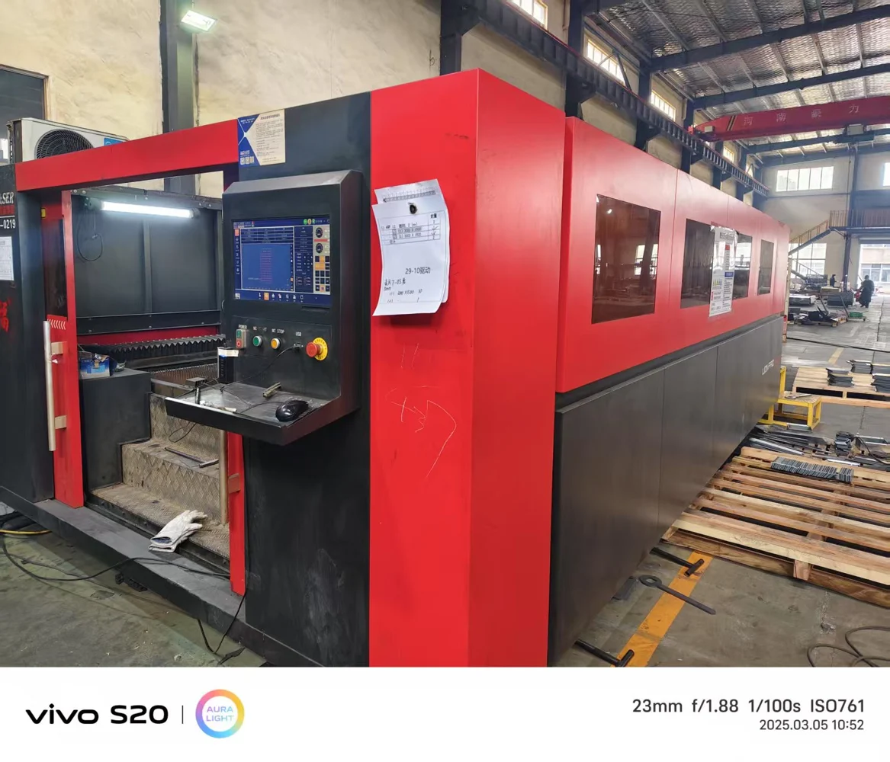
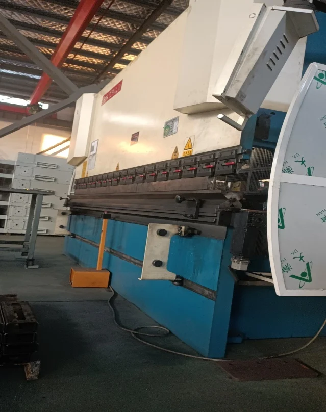
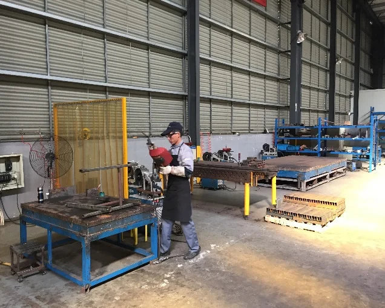
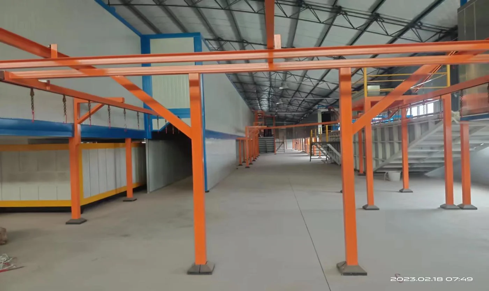
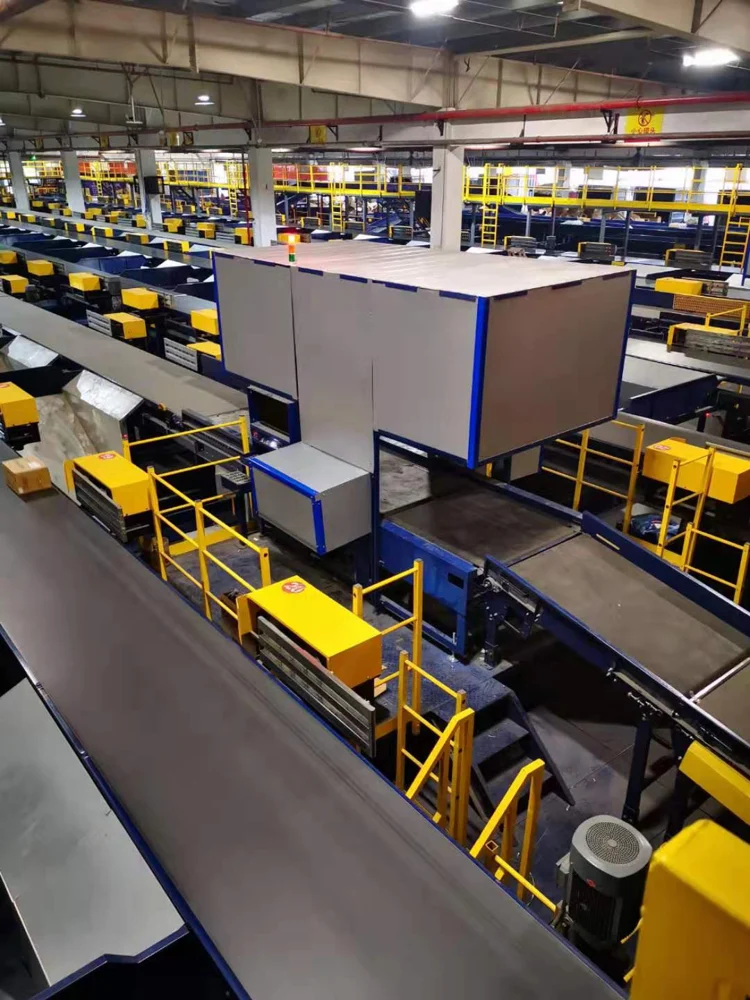
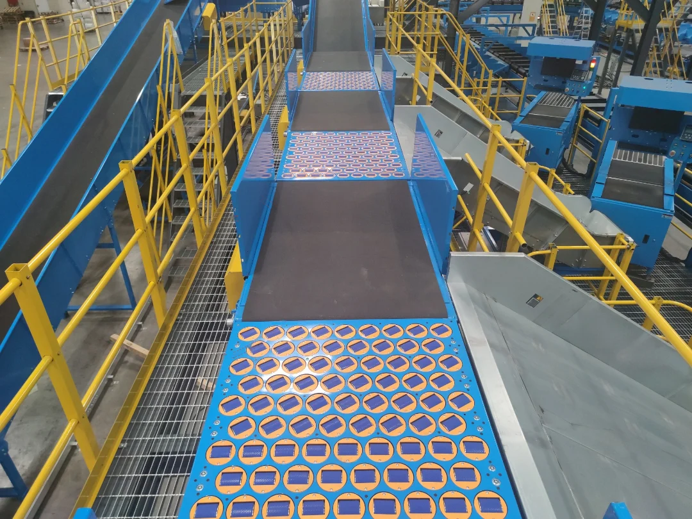
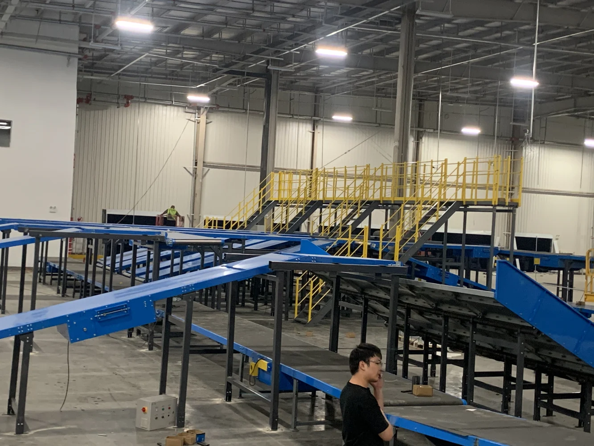
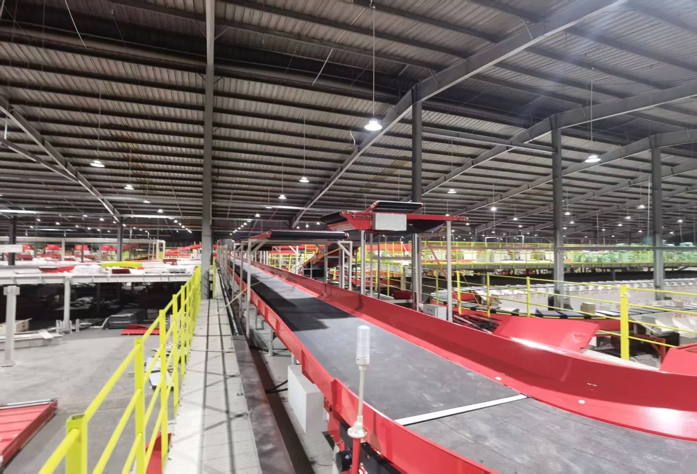

COMPANY PROFILE
会社概要
日本法人の会社概要
未来を形に、共に進む
― 日本品質 × 中国製造 × AI技術が創る―
Automaixは、物流自動化システムおよびマテリアルハンドリング機器の開発・設計・製造を手がけています。日本のものづくりに根ざした品質管理と現場改善の思想に、中国の製造技術・生産能力、先進的なAI技術を融合。トヨタ生産方式（TPS）に代表されるムダの排除、標準化、継続的改善の考え方を大切にし、現場に適した自動化を追求しています。
物流・製造現場における省人化、作業負荷の軽減、安全性・品質・生産性の向上を支援します。企画・システム設計から製造、据付・試運転、保守・技術支援まで、一貫して対応します。
私たちは、現場で働く方々の作業負荷を軽減し、安全で安心して働ける環境づくりに貢献する「ぬくもりのある自動化」を目指しています。
自動化に、知能を
現場に優しい技術アイディア
未来に、より大きな可能性
Automaixの名称には、AUTO（自動化）、MAX（可能性の最大化）、AI（人工知能と人を想う心）への想いを込めています。
| 会社名 | 株式会社Automaix |
|---|---|
| 英文表記 | Automaix Co., Ltd. |
| 代表者 | 代表取締役 安田 純 |
| 本店所在地 | 〒507-0814 岐阜県多治見市市之倉町12丁目353番地の307 |
| 設立 | 2026年9月18日 |
| 資本金 | 990万円 |
| 自社工場 | 江蘇省常州市 |
| 自社工場の製造設備 | レーザー切断機6台・曲げ加工機4台・ロボット溶接2ステーション／手動溶接11ステーション・自動塗装ライン1基 |
| 事業内容 | ① 物流自動化設備・マテリアルハンドリング機器の企画、開発、製造および販売 ② 自動仕分けシステム・搬送設備・産業用ロボットの輸入販売 ③ 物流システムの設計・カスタマイズおよび導入支援 ④ 自動化設備の据付・組立・試運転・保守および技術サポート ⑤ 物流自動化に関する技術コンサルティング |
| 電話番号 | 050-6864-1858 |
| ホームページ | https://www.automaix.co.jp |
日本法人の沿革
株式会社Automaix 設立
製造・開発・統括の3拠点が連携する事業体制
中国の製造・研究開発拠点と日本本社が連携し、企画・設計から導入・保守までを一貫して推進します。
中国常州工場｜製造拠点
板金加工、溶接、塗装、組立、検査・出荷を担う製造拠点です。生産能力、コスト競争力、製造リードタイムを強みに、製品の安定供給を支えます。
中国蘇州 設計・研究開発センター｜開発拠点
研究開発、技術設計、試作・評価、性能検証を担う開発拠点です。技術力の向上と開発の迅速化を図り、製品・システムの高度化を推進します。
日本本社（岐阜県多治見市）｜統括拠点
営業・技術提案、マーケティング、保守・技術支援、品質管理を担う統括拠点です。お客様の運用要件と現場課題を把握し、設備構成の提案と継続的な改善を推進します。
各拠点の専門機能を連携させ、開発・製造・品質管理・顧客対応を一体的に進めることで、お客様の事業を支えます。
2生産拠点の総生産面積は62,000 m²（東京ドーム約1.3個分）です。会社パンフレットでは、品質認定の取得とトヨタ生産方式（TPS）の導入による改善活動を紹介しています。
事業の歩み（会社パンフレットより）
自社工場の事業展開と日本法人の設立を、会社パンフレットの年次区分に沿ってご紹介します。日本法人は2026年9月18日に設立しました。
- 2017
- 工場設立、業務開始。
- 2018–2020
- ZTO ExpressのBランク、BEST Express・STO ExpressのAランクサプライヤーに認定。
- 2021–2022
- SF Expressのサプライヤー認証を取得。JD Logistics・CainiaoのAランクサプライヤーに認定。
- 2023–2024
- SF Expressの物流設備総合サプライヤーに認定。
- 2025–2026
- 事業領域を拡大。売上高5億人民元超を達成（会社パンフレット記載）。
- 2026
- 日本法人・株式会社Automaixを設立。
自社工場
中国常州工場｜製造拠点
板金加工、溶接、塗装、組立、検査・出荷を担う製造拠点です。生産能力、コスト競争力、製造リードタイムを強みに、製品の安定供給を支えます。
中国蘇州 設計・研究開発センター｜開発拠点
研究開発、技術設計、試作・評価、性能検証を担う開発拠点です。技術力の向上と開発の迅速化を図り、製品・システムの高度化を推進します。
- 総生産面積（2拠点）
- 62,000m²
- 施工実績
- 1,000件以上
- 主要取引先数
- 10社以上
- 累計特許件数
- 110件以上
- 研究開発・技術職の人員比率
- 40%以上
製造設備と品質管理




品質管理と教育
ISO 9001に基づく品質マネジメントシステムを運用しています。品質検査・検査報告に加え、お客様の要求基準に応じた教育・評価、実技訓練、不具合・課題の検証を通じて、作業の標準化と品質の安定化を図っています。
技術認定・対外評価
- 2020年：中国の「高新技術企業」に認定、2023年に再認定
- 2025年：江蘇省の「専精特新」中小企業に選定
- 2019年：常州市武進区のスマート物流搬送工程技術研究センターとして承認
- 2018年：シュナイダーエレクトリック中国のOEM戦略パートナー
自社工場の沿革・売上高
- 2017
- 会社設立。ZTO ExpressのBランクサプライヤー、BEST Express・STO ExpressのAランクサプライヤー。
- 2018
- YTO ExpressのAランクサプライヤー。
- 2019
- Yunda Expressへの供給を開始。
- 2020
- 中国郵政・J&T Expressへの供給を開始。
- 2021
- SF Expressのサプライヤー審査に合格。
- 2022
- 菜鳥（Cainiao）のAランクサプライヤー。
- 2024
- SF Expressの自動化設備サプライヤーとなる。
- 2025
- 美団（Meituan）のサプライヤーおよびSF Expressの包括調達サプライヤーとなる。
| 年度 | 売上高 |
|---|---|
| 2022 | 29.87 |
| 2023 | 34.35 |
| 2024 | 52.28 |
| 2025 | 76.17 |
自社工場のシステム導入事例
自社工場が手がけた、搬送設備と自動仕分け設備による物流システムの構築事例をご紹介します。




中国国内の竣工実績：武漢（2025年11月1日）、蕪湖（2025年10月30日）、盤錦（2026年5月30日）。
工事中の案件：淮安・合肥のプロジェクト（2026年版の会社紹介資料における状況）。
導入後の保守・技術支援
日本国内での設備導入、保守・点検、技術支援に関するご相談は、株式会社Automaixが承ります。
Automaixに相談する →